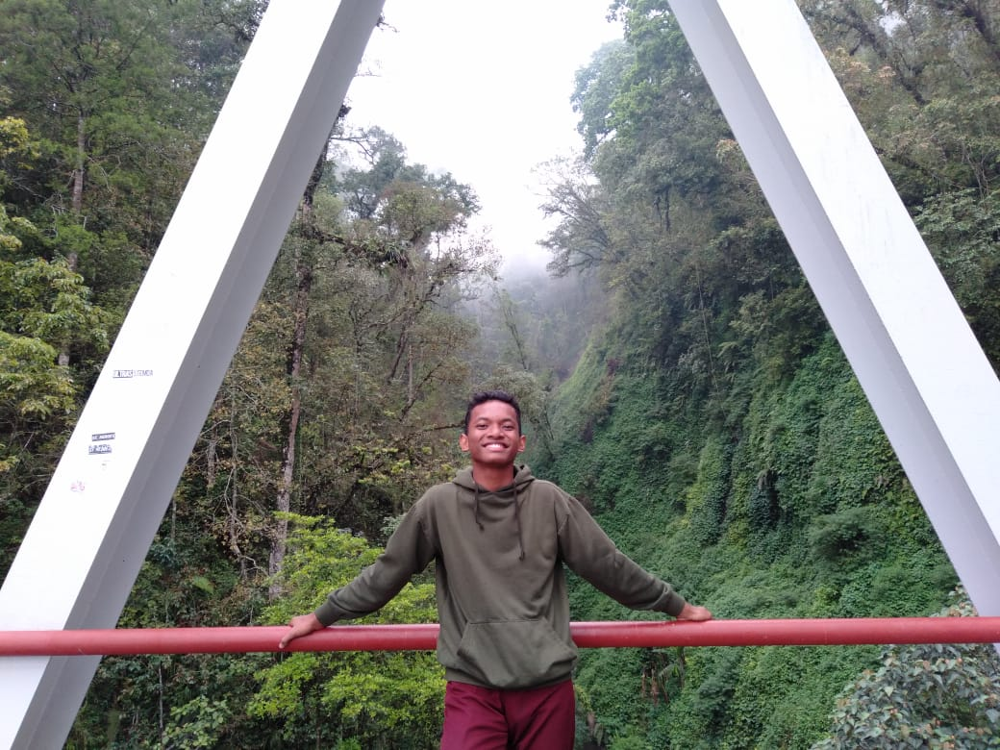
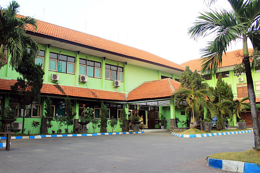

tentangaku.com
Sekolah Saya


Sekolah Menengah Kejuruan Negeri 2 Buduran (SMK) berasal dari Sekolah
Menengah Ekonomi Atas (SMEA) yang sebelumnya merupakan peningkatan
sekolah dari Sekolah Menengah Ekonomi Pertama (SMEP) di Porong
ditingkatkan menjadi Sekolah Menengah Ekonomi Atas (SMEA) yang
diterbitkan melalui Keputusan Menteri Pendidikan dan Kebudayaan Republik
Indonesia atas nama Sekretaris Jenderal T. Umar Ali Nomor : 017/0/1979
tanggal 29 Januari 1979. Bersama itu pula yang menjabat sebagai Kepala
Sekolah Menengah Ekonomi Atas (SMEA) yang pertama dijabat oleh Bapak
Drs. Heru Soejipto.
Untuk memindahkan akses dan segala urusan administrasi Kepala Sekolah
waktu itu minta agar lokasi baru ada di perkotaan Sidoarjo dengan
menempati lahan milik Pemerintah Daerah tingkat II Kabupaten Sidoarjo
yang merupakan bekas gedung Kesenian di Jalan Sultan Agung No. 13
Sidoarjo. Dengan demikian gedung sekolah lama di Porong yang merupakan
cikal bakal berdirinya SMEA Negeri Sidoarjo menjadi bagian SMEA Negeri
Sidoarjo (SMEA Negeri Sidoarjo di Porong/Kelas Jauh).
Awal berdirinya sekolah SMEA Negeri Sidoarjo membuka Jurusan antara lain
: Jurusan Tata Buku (TB) yang sekarang dinamakan Akuntansi/Akuntansi dan
Keuangan, Tata Usaha (TU) yang sekarang dinamakan Administrasi
Perkantoran/Otomatisasi dan Tata Kelola Perkantoran dan Tata Niaga (TN)
yang sekarang dinamakan Pemasaran/Bisnis Daring dan Pemasaran.
Dalam kegiatan proses belajar mengajar Jurusan Akuntansi menempati
gedung lama SMEA Negeri Sidoarjo di Porong sebagai kelas jauh, sedangkan
jurusan Administrasi Perkantoran dan Pemasaran menempati gedung sekolah
baru SMEA Negeri Sidoarjo Jl. Sultan Agung No. 13 Sidoarjo. Namun
demikian dalam melaksanakan kegiatan proses belajar mengajar yang
bersifat praktik (mengetik dll) jurusan Akuntansi bertempat di SMEA
Negeri Sidoarjo jalan Sultan Agung No. 13 Sidoarjo yang merupakan pusat
kegiatan.
Pada tanggal 7 Januari 1986 Kepala SMEA Negeri Sidoarjo 1986 Kepala SMEA
Negeri Sidoarjo dipindahkan ke SMEA Negeri 2 Surabaya, selanjutnya
dilakukan serah terima jabatan Kepala SMEA Negeri Sidoarjo dari Bapak
Drs. Heru Soejipto diserahkan kepada penggantinya Bapak Drs. Soehardjito
pindahan dari SMEA Negeri Bondowoso.
Dalam perjalananwaktu ada beberapa pembenahan yang dilakukan terutama
penambahan ruang kelas di SMEA Negeri Sidoarjo di Porong karena ada
penambahan jumlah kelas jurusan Akuntansi.
pada bulan Juli 1994 SMEA Negeri Sidoarjo dan di Porong, berpindah
menempati Gedung Sekolah baru di Jalan Jenggolo No. 2A Siwalanpanji
Kecamatan Buduran Sidoarjo yang peresmiannya dilaksanakan pada tanggal
16 September 1994 oleh Bapak Edhi Sanyoto Bupati Kepala Daerah Tingkat
II Kabupaten Sidoarjo. Gedung sekolah sebelumnya yang di jalan Sultan
Agung 13 Sidoarjo yang ditinggalkan pada tanggal 3 Januari 1995
dikembalikan kepada Pemerintah Daerah Tingkat II Sidoarjo, sedangkan
lokasi gedung di Porong didirikan sekolah baru SMP Negeri 3 Porong.
Pada tanggal 3 Oktober 1994 diadakan serah terima jabatan Kepala SMEA
Negeri Sidoarjo dari Bapak Drs. Soehardjito yang memasuki purna tugas
kepada Dra. Sri Wahyuni pindahan dari SMEA Negeri 2 Surabaya. Tanggal 7
Maret 1997, melalui keputusan Menteri Pendidikan dan Kebudayaan Republik
Indonesia nomor : 036/0/1997 Tentang Perubahan Nomenklatur SMKTA menjadi
SMK serta organisasi dan tatakerja SMK maka Sekolah yang bernama SMEA
Negeri Sidoarjo berubah menjadi SMK Negeri 2 Buduran Kabupaten Sidoarjo.
Tahun pelajaran 2004/2005 SMK Negeri 2 Buduran Sidoarjo membuka Program
Studi Keahlian Teknik Komputer dan Informatika yaitu Kompetensi Keahlian
Multimedia.
Tanggal 12 Oktober 2004 serah terima jabatan Kepala SMK Negeri 2 Buduran
Sidoarjo dari Ibu Dra. Sri wahyuni yang telah memasuki purna tugas
kepada Ibu Dra. Fatimah, MM sebagai pelaksana tugas karena masih
merangkap jabatan dengan Kepala SMK Negeri 1 Buduran sidoarjo. Tanggal 2
februari 2006 serah terima jabatan dari Pelaksana Tugas Ibu Dra.
Fatimah, MM kepada penggantinya Drs. Gatot Saudi Akzam, MM pindahan dari
SMK Negeri 1 Sidoarjo dan pejabat lama kembali memimpin SMK negeri 1
Buduran Sidoarjo.
Selanjutnya melalui Keputusan Direktur Pembinaan Sekolah Menengah
Kejuruan Direktorat Jenderal Manajemen Nasional Nomor :
035/C5.2/Kep/MN/2006 tanggal 12 Oktober 2006 tentang Penetapan Sekolah
Bertaraf Internasional (SBI). Pada Program Kerjasama Pemerintah
Indonesia – German maka SMK Negeri 2 Buduran Sidoarjo dinyatakan lulus
seleksi dan verifikasi untuk dikembangkan sebagai Sekolah Bertaraf
Internasional.
Hal tersebut mengacu pada surat keputusan sebelumnya yaitu Keputusan
Direktur Pembinaan Sekolah Menengah Kejuruan Nomor :
0250/C5.4/KepKU/2006 tanggal 2 Oktober 2006 tentang Pembinaan Subsidi
untuk Swadaya Persiapan SMK Bertaraf Internasional Tahun Anggaran 2006
pada Program Unggulan Akuntansi.
Pada tahun 2007 SMK negeri 2 Buduran Sidoarjo telah menetapkan dan
menerapkan suatu sistem manajemen mutu ISO : 9001:2000 dilanjutkan ISO :
9001:2008. Di dalam mengikuti kegiatan di berbagai perlombaan salah
satunya Lomba Ketrampilan Siswa (LKS) baik di Tingkat Kabupaten,
Provinsi Jawa Timur maupun Tingkat Nasional, SMK Negeri 2 Buduran
Sidoarjo selalu mengikuti. Dan Alhamdulillah sebagian besar SMK Negeri 2
Buduran selalu menjuarai evant-evant tersebut.
Pada tahun pelajaran 2008-2009 SMK negeri 2 Buduran Sidoarjo membuka
Kompetensi Keahlian Baru yaitu Rekayasa Perangkat Lunak, berikutnya pada
tahun pelajaran 2009-2010 SMK Negeri 2 Buduran membuka lagi jurusan baru
yaitu Kompetensi Keahlian Perbankan. Hal ini dikarenakan animo pendaftar
dari tahun ke tahun semakin meningkat sehingga perlu dibukanya jurusan
baru yang sesuai dengan kebutuhan dan lapangan kerja yang ada. Dan
setiap tahunnya lulusan SMK negeri 2 Buduran Sidoarjo banyak yang
terserap pada dunia usaha maupun dunia industri. Pada tahun pelajaran
2011-2012, SMK Negeri 2 Buduran Sidoarjo memiliki 36 rombongan belajar
dengan jumlah siswa per rombongan belajar sebanyak 36 siswa, total
seluruh siswa SMK negeri 2 Buduran sebanyak 1328 siswa.